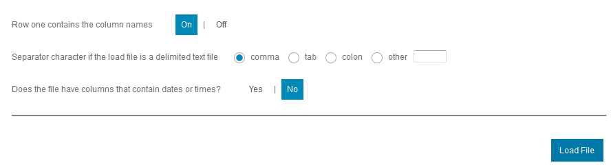
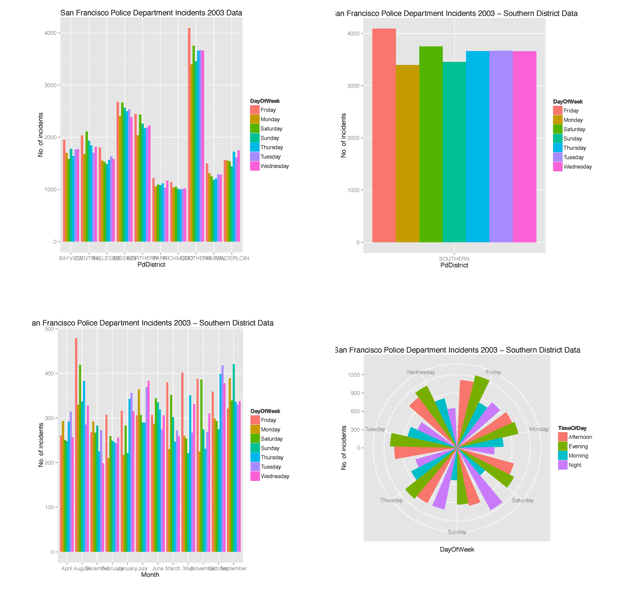

Roger, the data scientist at San Francisco City Office, needs to analyze the last 11 years of crime data and create plots to uncover data patterns so City can take appropriate safety measures and invest in police force.
This scenario uses statistical data analysis using R. If you have done programming with R before you will be able to tweak the code and run the deviation. If you have not used R before, do not worry, just follow the steps below.
Loading the data
1
Roger downloads the SF incident report data that is available in CSV zipped format from:
http://apps.sfgov.org/datafiles/view.php?file=Police/sfpd_incident_all_csv.zip.
If the network is slow and you can not download the csv.zip then just download 2013 data from here: sfpd_incident_2013.csv (18.9mb) (right click and select "Save Link As...")
2
Unzip the attached file which contains San Francisco Police Department data for year 2003
to 2014.
3
Login to the BLU Acceleration for Cloud web console with the provided user name/password.
Click on from the main menu.
4
Using section, browse and select
file from the unzipped
folder in Step 2.
5
Use default options and click on the
button

6
If you get an alert message, just click OK and the file upload will start. Once the upload
is complete you will see a preview of the data. Click on the
button.

7
Choose at the first
time when you are loading and then click on .

8
Change the table name as you would like and click on
.

9
After succeeds you can add more files
using the link.

You can choose not to load all yearly data to save time.
10
Repeat steps 4 through 9, except steps 7 and 8 where you need to select option
, for loading data
for years 2004 to 2014 into the same table.
Select the Schema and Table Name and then .
Select the Schema and Table Name and then .
Running R scripts
11
Download a sample R script from here:
sfpd_2003_graphs.R
12
Click . Click
and import the R script you just
downloaded.
13
Save and give it a name (eg. ). This
should be saved under .
14
Click to run. Once it is complete, click on
to view the plots.

15
You can also launch R studio, access the script and run it.
16
Browse the different plots that were created and enjoy.